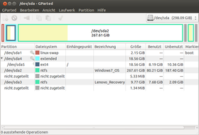

GParted
Dieser Artikel wurde für die folgenden Ubuntu-Versionen getestet:
Ubuntu 16.04 Xenial Xerus
Ubuntu 14.04 Trusty Tahr
Zum Verständnis dieses Artikels sind folgende Seiten hilfreich:
GParted  ist eine GTK-basierte grafische Benutzeroberfläche für GNU Parted. Mit GParted kann bequem die Partitionierung einer Festplatte geändert werden, also z.B. Partitionen vergrößert oder verkleinert, neu angelegt, verschoben oder neu formatiert werden. Allgemeine Informationen und Sicherheitshinweise zur Partitionierung findet man im Artikel Partitionierung.
ist eine GTK-basierte grafische Benutzeroberfläche für GNU Parted. Mit GParted kann bequem die Partitionierung einer Festplatte geändert werden, also z.B. Partitionen vergrößert oder verkleinert, neu angelegt, verschoben oder neu formatiert werden. Allgemeine Informationen und Sicherheitshinweise zur Partitionierung findet man im Artikel Partitionierung.

Installation¶
Hinweis:
GParted und ntfsprogs/ntfs-3g sind auf der Ubuntu-Live-CD bereits vorhanden. Da man nur Partitionen bearbeiten kann, die nicht eingehängt ("gemountet") sind, empfiehlt es sich mit der Live-CD von Ubuntu zu booten und die Änderungen in der Live-Sitzung durchzuführen. Will man weitere Festplatten partitionieren, kann man GParted wie im Folgenden beschrieben nachinstallieren.
Bei einer Standardinstallation ist GParted bereits vorhanden, ansonsten wird es durch folgendes Paket installiert [1]:
gparted
 mit apturl
mit apturl
Paketliste zum Kopieren:
sudo apt-get install gparted
sudo aptitude install gparted
Hat man GParted installiert, kann das Programm entweder über den entsprechenden Menüeintrag oder auf der Befehlszeile mit folgendem Befehl starten:
gparted-pkexec
Hinweis:
Fremdquelle¶
Neuere Versionen von GParted können über eine Fremdquelle von Getdeb installiert werden: gparted
Hinweis!
Zusätzliche Fremdquellen können das System gefährden.
Nach der Installation sollte die Fremdquelle wieder deaktiviert werden, da in dieser noch weitere Programme enthalten sind und somit andere, bereits auf dem PC installierte Programme mit aktualisiert werden.
GParted für NTFS-Partitionen¶
Will man mit GParted auch NTFS-Partitionen erstellen oder bearbeiten, so benötigt man den Dateisystem-Treiber NTFS-3G. Dieser ist bei einer Standardinstallation bereits vorhanden, ansonsten wird er durch folgendes Paket installiert [1]:
ntfs-3g
mit apturl
Paketliste zum Kopieren:
sudo apt-get install ntfs-3g
sudo aptitude install ntfs-3g
Damit sind auch das Erstellen von und alle Änderungen an NTFS-Partitionen möglich.
Weitere Pakete für die Bearbeitung von Dateisystemen sind im Artikel GNU Parted aufgelistet.
Live-CDs¶
Nachfolgend eine kleine Auswahl von gängigen Live-CDs, die als Alternative zur Ubuntu-Live-CD für die Partitionierung genutzt werden können.
Parted Magic¶
Parted Magic ist eine kostenpflichtige Live-CD, die GParted und einige hilfreiche Partitionierungsprogramme enthält. Die Hauptaufgabe ist das bequeme Erstellen oder Ändern von Partitionen, was allerdings entsprechendes Fachwissen voraussetzt. Neben der Desktop-Umgebung LXDE sind noch zahlreiche weitere Programme zur Datenrettung oder -verwaltung enthalten.
gParted Live-System¶
Das gparted Live-System basiert auf Debian live und bietet neben dem bekannten Partitionierungs-Tool eine grafische Oberfläche mit dem Fenstermanager Fluxbox an. Darüber hinaus ist eine Funktionen enthalten, mit partimage eine Systemsicherung durchzuführen. Zum Download  des gparted Live-CD ISO-Images.
des gparted Live-CD ISO-Images.
SystemRescueCD¶
SystemRescueCD ist ein Gentoo-Linux-System mit Datensicherungs- und Datenrettungsprogrammen sowie verschiedenen Systemwerkzeugen auf einer bootfähigen CD oder einem USB-Stick.
Ubuntu-Rescue-Remix¶
Der Ubuntu-Rescue-Remix ist eine speziell angepasste Version der jeweils aktuellen Ubuntu-Live-CD, die speziell für die Datenrettung und Systemreparatur verändert wurde. Sie ist auch von externen Datenträgern wie USB-Sticks startbar. Detaillierte Hinweise, wie mit den enthaltenen Werkzeugen umzugehen ist, finden sich unter dem Stichwort Data-Recovery . Eine Übersicht der Dateiformate und Programme, mit denen diese Version arbeiten kann findet sich auf der Projektseite .
Benutzung¶
Hinweis:
Man kann nur Partitionen bearbeiten, die gerade nicht in das Dateisystem eingehängt (gemountet) sind. Das bedeutet, dass man vor dem Bearbeiten einer Partition sicher stellen sollte, dass diese nicht eingehängt ist. Wechseldatenträger und -medien werden beispielsweise automatisch eingebunden und als Symbol auf dem Desktop dargestellt. Klickt man mit der rechten Maustaste auf das Symbol und wählt "Datenträger aushängen" so wird die Einbindung wieder gelöst und man kann den Datenträger bearbeiten.
Alternativ dazu kann das Aushängen der zu bearbeitenden Partition in GParted selbst erfolgen. Dazu mit der  Maustaste auf die gewünschte Partition klicken und "unmount" auswählen.
Maustaste auf die gewünschte Partition klicken und "unmount" auswählen.
Eine Ausnahme stellen die Root-Partition / und /home dar. Diese können im laufenden Betrieb nicht ausgehängt werden. Möchte man Änderungen an diesen Partitionen vornehmen, so ist es am einfachsten, eine der oben genannten Live-CDs bzw. die Ubuntu-Live-CD zu benutzen.
Die Benutzung von GParted ist relativ einfach, da das Programm komplett über ein Fenster bedient wird. In diesem Fenster sieht man die Aufteilung der aktuell gewählten Festplatte. Alle möglichen Optionen und Aktionen sind über die Menüleiste erreichbar. Nicht verfügbare Optionen bzw. Aktionen werden von GParted automatisch ausgeblendet. Im Folgenden werden die einzelnen Menüs kurz erklärt:
Im Menü "GParted" kann man über den Punkt "Laufwerke" das zu partitionierende Laufwerk auswählen (sofern man mehrere Festplatten hat), über "Laufwerke aktualisieren" werden die aktuell angeschlossenen Laufwerk neu eingelesen. Der Menüpunkt "Ansicht" "Dateisystemunterstützung" zeigt in einer Matrixdarstellung, welche Aktionen (Vergrößern, Verkleinern, Anlegen, etc.) mit den verschiedenen Arten der unterstützten Dateisysteme möglich sind.
Der Punkt "Bearbeiten" enthält drei Aktionen: Über "Rückgängig" können die zuletzt durchgeführten Aktionen rückgängig gemacht, bzw über "Löschen" alle Aktionen gelöscht werden; über "Ausführen" werden die gemachten Änderungen auf der gewählten Partition durchgeführt.
Achtung!
GParted speichert alle Änderungen (siehe unten) erst in einem Zwischenspeicher und führt diese erst dann aus, wenn man auf "Alle Operationen ausführen" klickt. Ist "Alle Operationen ausführen" ausgeführt, lassen sich die Änderungen nicht mehr rückgängig machen! Daher sollte "Alle Operationen ausführen" nur ausgewählt werden, wenn man sich bei den Änderungen sicher ist. Im schlimmsten Fall sind alle auf der Festplatte gespeicherten Daten verloren!
Im Menüpunkt "Ansicht" kann man über "Laufwerksinformationen" zusätzliche Informationen zur aktuell gewählten Platte links neben der Festplattenaufteilung einblenden; über "Ausstehende Operationen" blendet man ein Zusatzfenster ein, welches alle bisher durchgeführten Aktionen auflistet.
Hinweis:
Den Punkt "Ansicht -> Operationen" sollte man auf jeden Fall auswählen, da man so einen sehr guten Überblick über die geplanten Aktionen hat.
Im Menü "Laufwerk" befindet sich einen Punkt "Partitionstabelle erstellen...". Hier kann man die Art der Festplattenkennung setzen. Zur Verfügung stehen "msdos","aix","amiga","bsd","dvh","gpt","mac","pc98","sun","loop"
Achtung!
Ändert man die Festplattenkennung, so wird die gesamte Festplatte gelöscht! Anders als beim Bearbeiten von Partitionen wird die neue Festplattenkennung sofort erstellt und nicht erst zur Ausführung vorgemerkt.
Der Menüpunkt "Partition" beinhaltet alle Punkte zum Ändern der Partitionierung. Man kann die zu verändernden Partitionen entweder durch Anklicken in der graphischen Darstellung der Plattenbelegung oder durch Anklicken in der Tabelle auswählen. (Es ist darauf zu achten, daß hinter der zu ändernden Partition keine weitere Partition mehr eingehängt ist). Hier kann man über die Menüpunkte folgende Aktionen durchführen:
| GParted - Menü Partition | |
| Menüpunkt | Aktion |
| "Neu" | Legt eine neue Partition (in unbenutztem Festplattenplatz) an. In einem Menü kann man Größe, Dateisystem, etc. auswählen. |
| "Löschen" | Löscht die ausgewählte Partition, der Festplattenplatz wird anschließend als "frei" angezeigt |
| "Größe ändern/Verschieben" | Verändert die Größe einer Partition oder verschiebt die Partition. Die Änderung der Größe erfolgt im folgenden Fenster, ebenso die Verschiebung (per Drag&Drop). Eine Partition kann nur verschoben werden, wenn unmittelbar vor oder hinter der Partition ausreichend Platz ist! Sonderfall: Soll die erste logische Partition nach vorne vergrößert werden, muss zunächst die extended Partition entsprechend verändert werden; vergleichbares gilt auch am Ende der extended Partition. |
| "Kopieren" | Kopiert eine Partition, die anschließend über "Einfügen" an anderer Stelle wieder eingefügt werden kann |
| "Einfügen" | Fügt eine mit "Kopieren" kopierte Partition an einer auszuwählenden Stelle auf der Festplatte wieder ein. Dort muss ausreichend Platz vorhanden sein. |
| "Formatieren als" | Formatiert die ausgewählte Partition mit einem auszuwählenden Dateisystem. Zur Verfügung stehen alle gängigen Linux- und Windows-Dateisysteme. Durch die Formatierung gehen alle Daten verloren! |
| "Aushängen" | Hier kann eine noch eingehängte Partition ggf. ausgehängt werden |
| "Markierung bearbeiten" | Hier können Flags für die ausgewählte Partition (z.B. "boot") gesetzt werden |
| "Überprüfen" | Festplatten werden auf Fehler überprüft und korrigiert falls möglich |
| "Bezeichnung" | Der Partition wird ein Label zugeordnet |
| "New UUID" | Ordnet der Partition eine zufällige neue UUID zu |
| "Information" | Hier erhält man Detailinformationen zur gewählten Partition |
Achtung!
Durch falsches Setzen des Boot-Flags kann der Computer unter Umständen nicht mehr gestartet werden!
Der letzte Punkt in der Menüleiste ist "Hilfe". Hier kann man die Hilfsdatei und Informationen zu GParted aufrufen.
Problembehebung¶
Sehr große Festplatten (Faustregel: 2 TiB oder größer) verwenden eine Sektorgröße von 2048 oder 4096 Byte statt 512 Byte wie bisher. Ältere Versionen von GParted kommen damit nicht zurecht. Verwendet man dagegen die Version aus Ubuntu 12.04 zum Erstellen von Partitionen, dann können diese Platten anschließend auch mit älteren Ubuntu-Versionen problemlos genutzt werden.
Links¶
 Übersichtsartikel
Übersichtsartikel- Erstellt mit Inyoka
-
 2004 – 2017 ubuntuusers.de • Einige Rechte vorbehalten
2004 – 2017 ubuntuusers.de • Einige Rechte vorbehalten
Lizenz • Kontakt • Datenschutz • Impressum • Serverstatus -
Serverhousing gespendet von